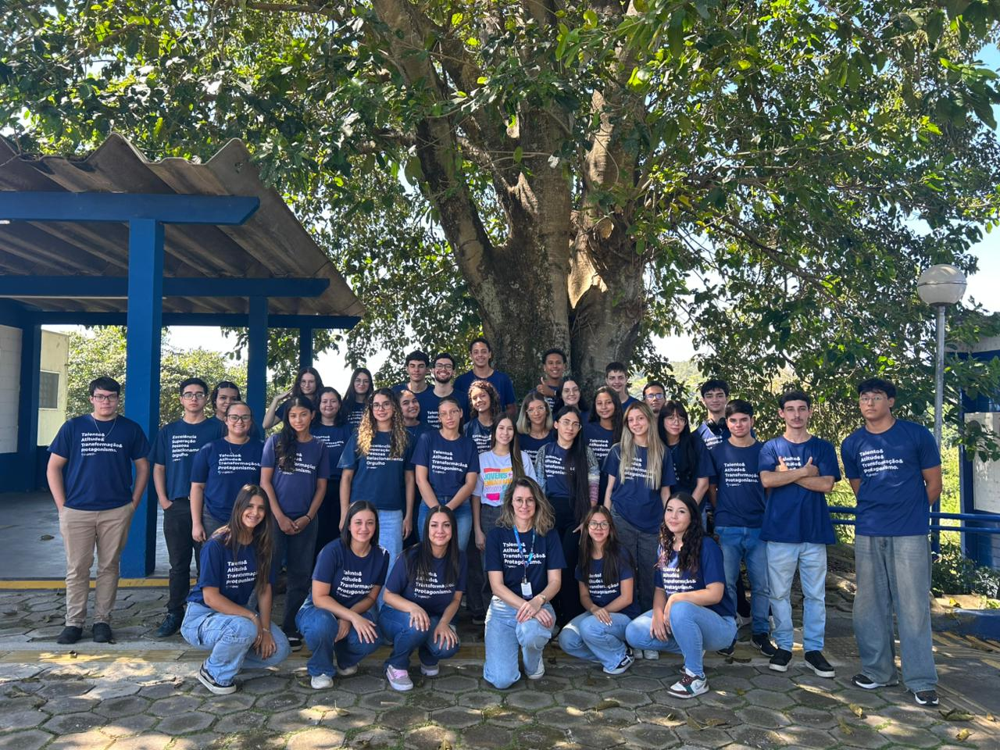

A Belle Sucré surgiu inspirada nas tradicionais confeitarias francesas, trazendo para nossa cidade o encanto de receitas artesanais e o prazer de um bom café. Começamos com uma pequena vitrine de doces e alguns lugares para sentar, mas logo o aroma e o sabor conquistaram os clientes. Hoje, unimos técnicas clássicas e ingredientes frescos para criar cafés e sobremesas que encantam os olhos e o paladar.
A ideia surgiu da paixão por doces finos e cafés especiais. Começamos com uma vitrine simples e poucos lugares, mas rapidamente conquistamos clientes pela qualidade e pelo cuidado. Hoje, somos uma cafeteria que une sabor, elegância e acolhimento.
Nossa paleta de cores foi cuidadosamente selecionada para representar a essência e o posicionamento da Belle Sucre Café:
Tons de Confeitaria: As variações de Vanilla e Almond remetem à base de nossos doces: açúcar, farinha, e a leveza das texturas.
Aroma de Café: Os tons terrosos e profundos de Mocca, Coffee, e Espresso trazem a referência imediata ao café, elemento central de nossa experiência. Sofisticação e Aconchego: A combinação equilibrada destes marrons e beges transmite, simultaneamente, o requinte de doces finos e o aconchego de uma cafeteria artesanal.
#D7BDA6
#AB7743
#B7957F
#6D3914
#84593D
#4C2B08
Qualidade Aconchego Carinho no atendimento Paixão pelo que fazemos Sustentabilidade
Encantar as pessoas com cafés e doces finos, criando um espaço acolhedor onde cada cliente viva momentos especiais
Ser reconhecida como a cafeteria é doceria mais querida da região, referência e, sabor, qualidade, excelência no atendimento e opções inclusivas
Os Facilitadores de Equipe da Belle Sucré tem como missão garantir que as equipes atuem de forma organizada, integrada e alinhada aos objetivos da empresa. O time trabalha para fortalecer a comunicação interna, apoiar os jovens na execução de suas atividades e assegurar que os projetos sejam desenvolvidos e entregues com qualidade, responsabilidade e comprometimento.
Organizamos o trabalho das equipes e apoiamos os jovens na resolução de problemas; Facilitamos reuniões e fortalecemos a comunicação entre os departamentos; Mantemos contato direto com a CEO para alinhamento de demandas e prioridades; Organizamos planilhas de controle e acompanhamento das atividades; Preparamos a programação das apresentações semanais; Elaboramos e atualizamos organogramas da empresa; Atendemos demandas dos jovens de diferentes departamentos, garantindo integração e fluidez nos processos; Contribuímos para a manutenção de um ambiente colaborativo, produtivo e focado no aprendizado.

Nossa equipe agradece.